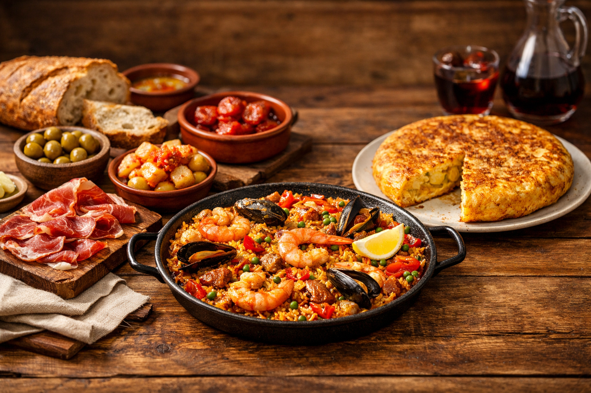
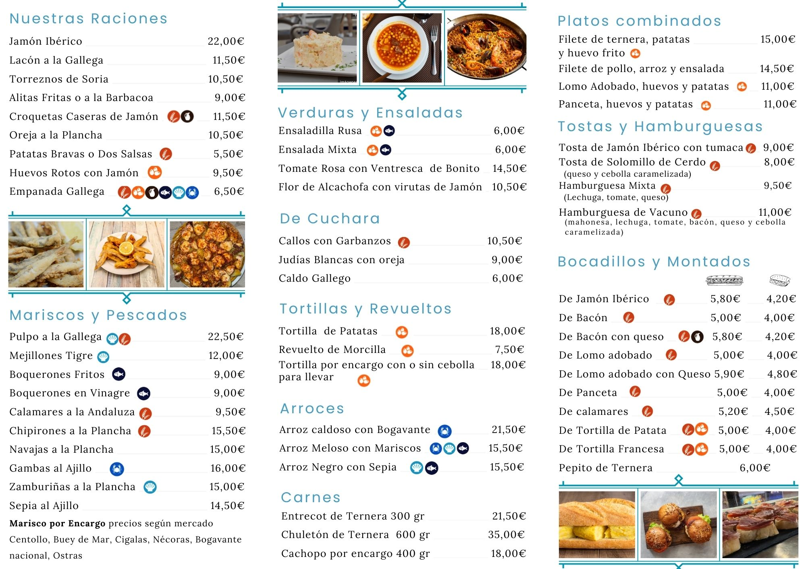

Menú del día en Ciudad Lineal, Madrid
Comida casera y cocina española con toque gallego en un ambiente cercano y familiar.
Dónde comer menú del día en La Elipa
Un Toque Gallego es una opción para comer en Ciudad Lineal, en el barrio de La Elipa, con cocina casera, platos españoles y un toque gallego.
Además del menú del día, en el restaurante encontrarás tapas, raciones, arroces, mariscos y bocadillos.
Qué encontrarás en Un Toque Gallego

Comida casera
Una propuesta para comer a diario en Madrid con cocina cercana y ambiente familiar.

Carta complementaria
Arroces, raciones, platos de cuchara, carnes, pescados y mariscos para completar la experiencia.